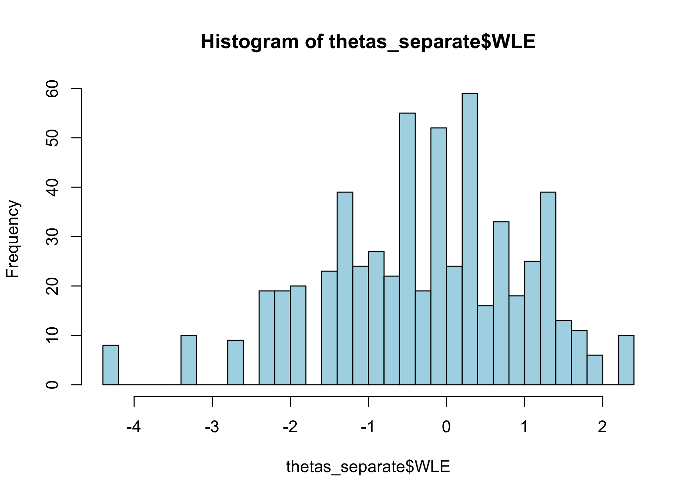
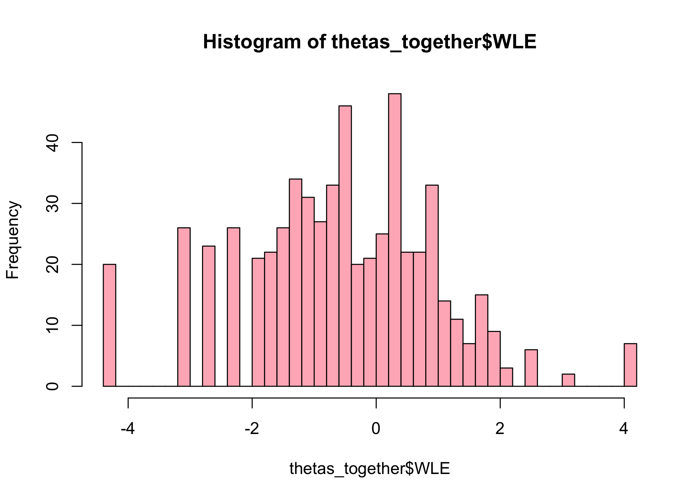
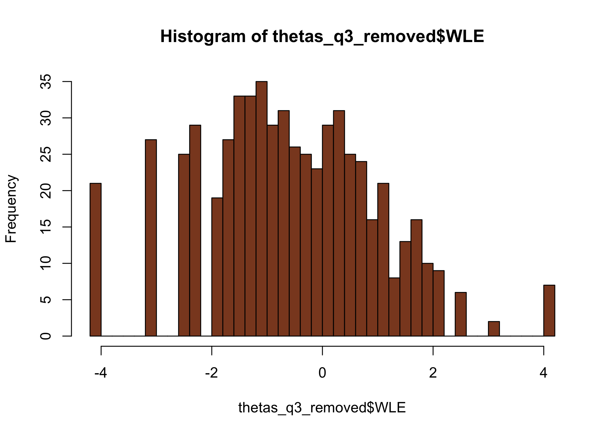

Out of interest of better understanding som aspects of differential item functioning (DIF, a form of invariance test):
how much does DIF affect estimated thetas (factor scores)?
how to do item-split in R (creating separate items for subgroups from one item with problematic DIF)
how an item-split compares to removing the item (and keeping the DIF item) in terms of absolute differences in estimated thetas
We’ll use simulated data in order to have knowledge of the thetas used to generate response data (“input thetas” in the text below), and make objective comparisons using the different estimated thetas.
Ideally, this would be a simulation study where we create lots of datasets with a systematic variation in some parameters to investigate effects. But maybe this is a first step towards that.
# make a tibble/dataframe also, for possible later useinputParams1<-tibble( q1 =c(1.2, 1.8, 2.4), q2 =c(-1.3, -0.5, 0.5), q3a =c(-0.3, 0.3, 1.2), # this is the DIF item q3b =c(-0.3+1, 0.3+1, 1.2+1), # this is the DIF item q4 =c(0.1, 0.6, 1.6), q5 =c(-0.3, 0.7, 1.5), q6 =c(-1.6, -1, -0.3), q7 =c(1, 1.8, 2.5), q8 =c(-1.3, -0.7, 0.4), q9 =c(-0.8, 1.4, 1.9), q10 =c(0.25, 1.25, 2.15))%>%t()%>%as.matrix()# center to 0inputParams1c<-inputParams1-mean(inputParams1)# item list for simulation for group 1tlist1<-list( q1 =list(inputParams1c[1,]), q2 =list(inputParams1c[2,]), q3 =list(inputParams1c[3,]), # this is the DIF item q4 =list(inputParams1c[5,]), q5 =list(inputParams1c[6,]), q6 =list(inputParams1c[7,]), q7 =list(inputParams1c[8,]), q8 =list(inputParams1c[9,]), q9 =list(inputParams1c[10,]), q10 =list(inputParams1c[11,]))# item list for simulation for group 2tlist2<-list( q1 =list(inputParams1c[1,]), q2 =list(inputParams1c[2,]), q3 =list(inputParams1c[4,]), # this is the DIF item q4 =list(inputParams1c[5,]), q5 =list(inputParams1c[6,]), q6 =list(inputParams1c[7,]), q7 =list(inputParams1c[8,]), q8 =list(inputParams1c[9,]), q9 =list(inputParams1c[10,]), q10 =list(inputParams1c[11,]))
Then generate random thetas that we save to file to be able to reproduce the analysis.
Code
# simulate thetasthetas1<-rnorm(300, mean =0, sd =1.5)thetas2<-rnorm(300, mean =0, sd =1.5)input_thetas<-c(thetas1,thetas2)# simulate response data based on the above defined item thresholdstd1<-SimPartialScore( deltaslist =tlist1, thetavec =thetas1)%>%as.data.frame()td2<-SimPartialScore( deltaslist =tlist2, thetavec =thetas2)%>%as.data.frame()d<-rbind(td1,td2)%>%add_column(group =rep(1:2, each =300))dif.group<-factor(d$group)d$group<-NULLall_data<-list(simResponses =d, dif_group =dif.group, input_thetas =input_thetas)# save simulated data for reproducibility#saveRDS(all_data,"dif_magnitude_1_0.Rdata")
Code
# read simulated data for reprodubilityall_data<-readRDS("dif_magnitude_1_0.Rdata")d<-all_data$simResponsesdif.group<-all_data$dif_groupinput_thetas<-all_data$input_thetas
We now have 10 items with 4 categories each. There are 600 respondents in all, with 300 showing differential item functioning for one item (item q3). DIF is induced at +1 logit uniform difference in location (all thresholds for item q3 are +1 logits).
Values highlighted in red are above the chosen cutoff 0.5 logits. Background color brown and blue indicate the lowest and highest values among the DIF groups.
thetas_separate<-RIestThetas(d2)hist(thetas_separate$WLE, breaks =30, col ="lightblue")hist(thetas_together$WLE, breaks =30, col ="lightpink")hist(thetas_q3_removed$WLE, breaks =30, , col ="sienna4")summary(thetas_separate$WLE)summary(thetas_together$WLE)summary(thetas_q3_removed$WLE)



Min. 1st Qu. Median Mean 3rd Qu. Max.
-4.3090 -1.0323 -0.1378 -0.3004 0.6439 2.2196
Min. 1st Qu. Median Mean 3rd Qu. Max.
-4.22145 -0.89478 0.06713 -0.03405 0.94001 4.10588
Min. 1st Qu. Median Mean 3rd Qu. Max.
-4.15902 -0.96844 -0.02300 -0.01072 1.00094 4.06447
The upper range is rather different for the item split subgroup when using this method, with max score of 2.22, compared to (expected) ~ 4.1. Let’s review the threshold locations.
The method for estimating item parameters and thetas used in the function RIestThetas() may be at fault for the odd results in thetas estimated by the item set with item split? We can separate the two steps, and use a separate function for theta estimation with manual input of item parameters.
Looks like the two step approach worked a lot better. Since the item parameter estimation is identical (both are using eRm::PCM()), the reason should be the difference in theta estimation. The two-step approach uses catR::thetaEst() for theta estimation, which is probably handling missing data better than iarm::person_estimates(). Note: both approaches use the Weighted Likelihood Estimation to minimize bias (Warm, 1989).
3 Results
3.1 Summarised
First, absolute differences in estimated thetas compared to input thetas.
Code
c_diff<-c%>%mutate(with_q3 =abs(together_RIestThetas-input_thetas), q3_removed =abs(together_q3_rem-input_thetas), q3_split =abs(separate_catR-input_thetas))%>%select(!names(c))c_diff%>%pivot_longer(everything())%>%ggplot(aes(x =value))+geom_histogram(bins =50)+facet_wrap(~name, ncol =1)+labs(x ="Absolute difference in logits", title ="Comparing input thetas to estimated", subtitle ="Distribution of bias")
We should look at the particular region where the DIF item is located, since it should have the most impact there.
3.2 Across the latent continuum
First, the test information function (TIF) curve could be of interest to understand what to expect in terms of estimation bias due to reliability limitations. Even more interesting is the table showing range of SEM.
The lowest SEM with q3 is 0.384, at logit score 0.356.
Lowest SEM without q3 is 0.416, at logit score 0.322 to 0.491, which makes a difference in minimal SEM of about 0.032 compared to including the DIF item. 0.032 * 1.96 = 0.064 for a 95% CI.
Analysis of Variance Table
Model 1: value ~ name
Model 2: value ~ name
Model 3: value ~ name
Res.Df RSS Df Sum of Sq F Pr(>F)
1 1198 2552.6
2 1198 2560.5 0 -7.8668
3 1198 2570.7 0 -10.2168
Analysis of Variance Table
Model 1: value ~ name
Model 2: value ~ name
Model 3: value ~ name
Res.Df RSS Df Sum of Sq F Pr(>F)
1 848 606.93
2 848 623.18 0 -16.245
3 848 609.47 0 13.708
---title: "Rasch DIF magnitude & item split"subtitle: "Brief exploration of Differential Item Functioning in R"author: name: Magnus Johansson affiliation: RISE Research Institutes of Sweden affiliation-url: https://www.ri.se/en/shic orcid: 0000-0003-1669-592Xdate: last-modifiedcitation: type: 'webpage'csl: apa.cslexecute: cache: true warning: false message: falseeditor: markdown: wrap: 72editor_options: chunk_output_type: console---## BackgroundOut of interest of better understanding som aspects of differential item functioning (DIF, a form of invariance test):- how much does DIF affect estimated thetas (factor scores)?- how to do item-split in R (creating separate items for subgroups from one item with problematic DIF)- how an item-split compares to removing the item (and keeping the DIF item) in terms of absolute differences in estimated thetasWe'll use simulated data in order to have knowledge of the thetas used to generate response data ("input thetas" in the text below), and make objective comparisons using the different estimated thetas.Ideally, this would be a simulation study where we create lots of datasets with a systematic variation in some parameters to investigate effects. But maybe this is a first step towards that.```{r}#| code-fold: truelibrary(tidyverse)library(eRm)library(iarm)library(RISEkbmRasch) # devtools::install_github("pgmj/RISEkbmRasch", dependencies = TRUE)library(summarytools)library(ghibli)### some commands exist in multiple packages, here we define preferred ones that are frequently usedselect <- dplyr::selectcount <- dplyr::countrecode <- car::recoderename <- dplyr::renametheme_rise <-function(fontfamily ="Lato", axissize =13, titlesize =15,margins =12, axisface ="plain", panelDist =0.6, ...) {theme_minimal() +theme(text =element_text(family = fontfamily),axis.title.x =element_text(margin =margin(t = margins),size = axissize ),axis.title.y =element_text(margin =margin(r = margins),size = axissize ),plot.title =element_text(face ="bold",size = titlesize ),axis.title =element_text(face = axisface ),plot.caption =element_text(face ="italic" ),legend.text =element_text(family = fontfamily),legend.background =element_rect(color ="lightgrey"),strip.background =element_rect(color ="lightgrey"),panel.spacing =unit(panelDist, "cm", data =NULL),panel.border =element_rect(color ="grey", fill =NA), ... )}theme_set(theme_rise())```### Simulate response dataFirst define input parameters for items.```{r}# make a tibble/dataframe also, for possible later useinputParams1 <-tibble(q1 =c(1.2, 1.8, 2.4),q2 =c(-1.3, -0.5, 0.5),q3a =c(-0.3, 0.3, 1.2), # this is the DIF itemq3b =c(-0.3+1, 0.3+1, 1.2+1), # this is the DIF itemq4 =c(0.1, 0.6, 1.6),q5 =c(-0.3, 0.7, 1.5),q6 =c(-1.6, -1, -0.3),q7 =c(1, 1.8, 2.5),q8 =c(-1.3, -0.7, 0.4),q9 =c(-0.8, 1.4, 1.9),q10 =c(0.25, 1.25, 2.15)) %>%t() %>%as.matrix()# center to 0inputParams1c <- inputParams1 -mean(inputParams1)# item list for simulation for group 1tlist1 <-list(q1 =list(inputParams1c[1,]),q2 =list(inputParams1c[2,]),q3 =list(inputParams1c[3,]), # this is the DIF itemq4 =list(inputParams1c[5,]),q5 =list(inputParams1c[6,]),q6 =list(inputParams1c[7,]),q7 =list(inputParams1c[8,]),q8 =list(inputParams1c[9,]),q9 =list(inputParams1c[10,]),q10 =list(inputParams1c[11,]))# item list for simulation for group 2tlist2 <-list(q1 =list(inputParams1c[1,]),q2 =list(inputParams1c[2,]),q3 =list(inputParams1c[4,]), # this is the DIF itemq4 =list(inputParams1c[5,]),q5 =list(inputParams1c[6,]),q6 =list(inputParams1c[7,]),q7 =list(inputParams1c[8,]),q8 =list(inputParams1c[9,]),q9 =list(inputParams1c[10,]),q10 =list(inputParams1c[11,]))```Then generate random thetas that we save to file to be able to reproduce the analysis.```{r}#| eval: false# simulate thetasthetas1 <-rnorm(300, mean =0, sd =1.5)thetas2 <-rnorm(300, mean =0, sd =1.5)input_thetas <-c(thetas1,thetas2)# simulate response data based on the above defined item thresholdstd1 <-SimPartialScore(deltaslist = tlist1,thetavec = thetas1) %>%as.data.frame()td2 <-SimPartialScore(deltaslist = tlist2,thetavec = thetas2) %>%as.data.frame()d <-rbind(td1,td2) %>%add_column(group =rep(1:2, each =300))dif.group <-factor(d$group)d$group <-NULLall_data <-list(simResponses = d,dif_group = dif.group,input_thetas = input_thetas)# save simulated data for reproducibility#saveRDS(all_data,"dif_magnitude_1_0.Rdata")``````{r}# read simulated data for reprodubilityall_data <-readRDS("dif_magnitude_1_0.Rdata")d <- all_data$simResponsesdif.group <- all_data$dif_groupinput_thetas <- all_data$input_thetas```We now have 10 items with 4 categories each. There are 600 respondents in all, with 300 showing differential item functioning for one item (item q3). DIF is induced at +1 logit uniform difference in location (all thresholds for item q3 are +1 logits).## DIF assessmentLet's test for DIF with some different methods.### LR-test```{r}RIdifTableLR(d, dif.group)RIdifThreshFigLR(d, dif.group)```### Partial gamma```{r}RIpartgamDIF(d, dif.group)```### Psychotree```{r}RIdifTable(d, dif.group)```DIF clearly shown.### Item splitNow, we'll do an item split and compare thetas for both groups with and without split, and also with the DIF item removed.``` {r}thetas_together <- RIestThetas(d)thetas_q3_removed <- RIestThetas(d %>% select(!q3))d2 <- d %>% add_column(group = dif.group) %>% mutate(q3a = if_else(group == 1, q3, NA), q3b = if_else(group == 2, q3, NA) ) %>% select(!group) %>% select(!q3)```Let's look at the data and a targeting plot.``` {r}RItileplot(d2)RImissing(d2)RItargeting(d2)```Comparing to non-split data.```{r}RItargeting(d)itemlabels <-data.frame(itemnr =names(d), item ="")RIitemHierarchy(d)```### Estimating thetas```{r}#| layout-ncol: 2thetas_separate <-RIestThetas(d2)hist(thetas_separate$WLE, breaks =30, col ="lightblue")hist(thetas_together$WLE, breaks =30, col ="lightpink")hist(thetas_q3_removed$WLE, breaks =30, , col ="sienna4")summary(thetas_separate$WLE)summary(thetas_together$WLE)summary(thetas_q3_removed$WLE)```The upper range is rather different for the item split subgroup when using this method, with max score of 2.22, compared to (expected) ~ 4.1. Let's review the threshold locations.### Comparing item parameters::: panel-tabset#### Original data```{r}RIitemparams(d)```#### Item split```{r}RIitemparams(d2)```#### DIF item removed```{r}RIitemparams(d %>%select(!q3))```#### Plot estimation bias```{r}#| code-fold: truedp <-RIitemparams(d, output ="dataframe") %>%select(!Location) %>%set_names(paste0("orig_",1:3)) %>%rownames_to_column("item") %>%filter(!str_detect(item,"q3"))dp2 <-RIitemparams(d2, output ="dataframe") %>%select(!Location) %>%set_names(paste0("split_",1:3)) %>%rownames_to_column("item") %>%filter(!str_detect(item,"q3"))dp3 <-RIitemparams(d %>%select(!q3), output ="dataframe") %>%select(!Location) %>%set_names(paste0("q3rem_",1:3)) %>%rownames_to_column("item") %>%filter(!str_detect(item,"q3"))d_params <-cbind(dp,dp2[,-1],dp3[,-1]) # bind columns, keeping one "item" columndpin <- inputParams1c %>%as.data.frame() %>%set_names(paste0("input_",1:3)) %>%rownames_to_column("item") %>%filter(!str_detect(item,"q3"))dpin_long <- dpin %>%pivot_longer(!item,names_sep ="_",names_to =c("source","threshold"),values_to ="input")``````{r}#| code-fold: trued_params %>%pivot_longer(!item, names_sep ="_",names_to =c("source","threshold")) %>%left_join(dpin_long[,-2], by =c("item","threshold")) %>%group_by(source,item,threshold) %>%summarise(abs_diff =abs(input - value)) %>%ggplot(aes(x = threshold, y = abs_diff, color = source)) +geom_point(size =2, alpha =0.85) +geom_line(aes(group = source)) +facet_wrap(~ item) +labs(x ="Absolute bias (logits)")```#### Summary plot estimation bias```{r}#| code-fold: trueitemlocs <-RIitemparams(d %>%select(!q3), output ="dataframe") %>%pull(Location)item_order <-sort(as.numeric(itemlocs))d_params %>%pivot_longer(!item, names_sep ="_",names_to =c("source","threshold")) %>%left_join(dpin_long[,-2], by =c("item","threshold")) %>%group_by(source,item,threshold) %>%summarise(abs_diff =abs(input - value)) %>%ungroup() %>%group_by(source,item) %>%summarise(sum_diff =sum(abs_diff)) %>%ungroup() %>%pivot_wider(values_from ="sum_diff",names_from ="source",id_cols ="item") %>%pivot_longer(!item) %>%mutate(item =factor(item, levels =names(itemlocs), labels =paste0(names(itemlocs),"_",as.numeric(itemlocs)))) %>%ggplot(aes(x = item, y = value, color = name) ) +geom_point(size =3) +labs(title ="Total estimation bias for each item (all thresholds) and item set",y ="Absolute bias (logits)",x ="Item (and average location)") +scale_y_continuous(limits =c(0,NA))```:::#### `mirt` comparisonPerhaps the `mirt` package could be more accurate in item threshold estimation when we have item split?```{r}#| code-fold: truemirt_out <-mirt(data = d, model =1, itemtype ="Rasch", verbose =FALSE)mirt_params <-coef(mirt_out, simplify =TRUE, IRTpars =TRUE)$items %>%as.data.frame() %>%select(!a) %>%set_names(paste0("orig_",1:3)) %>%as.matrix()dpm <- mirt_params -mean(mirt_params)dpm <- dpm %>%as.data.frame() %>%rownames_to_column("item") %>%filter(!str_detect(item,"q3"))mirt_out <-mirt(data = d2, model =1, itemtype ="Rasch", verbose =FALSE)mirt_params <-coef(mirt_out, simplify =TRUE, IRTpars =TRUE)$items %>%as.data.frame() %>%select(!a) %>%set_names(paste0("split_",1:3)) %>%as.matrix()dpm2 <- mirt_params -mean(mirt_params)dpm2 <- dpm2 %>%as.data.frame() %>%rownames_to_column("item") %>%filter(!str_detect(item,"q3"))mirt_out <-mirt(data = d %>%select(!q3), model =1, itemtype ="Rasch", verbose =FALSE)mirt_params <-coef(mirt_out, simplify =TRUE, IRTpars =TRUE)$items %>%as.data.frame() %>%select(!a) %>%set_names(paste0("q3rem_",1:3)) %>%as.matrix()dpm3 <- mirt_params -mean(mirt_params)dpm3 <- dpm3 %>%as.data.frame() %>%rownames_to_column("item") %>%filter(!str_detect(item,"q3"))d_params2 <-cbind(dpm,dpm2[,-1],dpm3[,-1]) # bind columns, keeping one "item" column```::: panel-tabset#### Plot estimation bias```{r}d_params2 %>%pivot_longer(!item, names_sep ="_",names_to =c("source","threshold")) %>%left_join(dpin_long[,-2], by =c("item","threshold")) %>%group_by(source,item,threshold) %>%summarise(abs_diff =abs(input - value)) %>%ggplot(aes(x = threshold, y = abs_diff, color = source)) +geom_point(alpha =0.85) +facet_wrap(~ item)```Seems indentical to eRm estimates.#### Summary plot estimation bias```{r}d_params2 %>%pivot_longer(!item, names_sep ="_",names_to =c("source","threshold")) %>%left_join(dpin_long[,-2], by =c("item","threshold")) %>%group_by(source,item,threshold) %>%summarise(abs_diff =abs(input - value)) %>%ungroup() %>%group_by(source,item) %>%summarise(sum_diff =sum(abs_diff)) %>%ungroup() %>%pivot_wider(values_from ="sum_diff",names_from ="source",id_cols ="item") %>%pivot_longer(!item) %>%mutate(item =factor(item, levels =names(itemlocs), labels =paste0(names(itemlocs),"_",as.numeric(itemlocs)))) %>%ggplot(aes(x = item, y = value, color = name) ) +geom_point(size =3) +labs(title ="mirt: Total estimation bias for each item and item set")```No difference here either.:::### Theta estimation investigatedThe method for estimating item parameters and thetas used in the function `RIestThetas()` may be at fault for the odd results in thetas estimated by the item set with item split? We can separate the two steps, and use a separate function for theta estimation with manual input of item parameters.```{r}itemps <-RIitemparams(d2, output ="dataframe") %>%select(!Location) %>%as.matrix()thetas_separate_catR <-RIestThetasOLD(d2, itemParams = itemps, theta_range =c(-8,8))c <-tibble(together_RIestThetas = thetas_together$WLE,together_q3_rem = thetas_q3_removed$WLE,separate_catR = thetas_separate_catR,separate_RIestThetas = thetas_separate$WLE,input_thetas = input_thetas)c %>%pivot_longer(everything(),names_to ="method",values_to ="theta") %>%ggplot(aes(x = theta)) +geom_histogram(bins =50) +facet_wrap(~method, axes ="all_x") +scale_x_continuous(breaks =seq(-5,5,1))```Looks like the two step approach worked a lot better. Since the item parameter estimation is identical (both are using `eRm::PCM()`), the reason should be the difference in theta estimation. The two-step approach uses `catR::thetaEst()` for theta estimation, which is probably handling missing data better than `iarm::person_estimates()`. Note: both approaches use the Weighted Likelihood Estimation to minimize bias (Warm, 1989).## Results ### SummarisedFirst, absolute differences in estimated thetas compared to input thetas.```{r}c_diff <- c %>%mutate(with_q3 =abs(together_RIestThetas - input_thetas),q3_removed =abs(together_q3_rem - input_thetas),q3_split =abs(separate_catR - input_thetas)) %>%select(!names(c))c_diff %>%pivot_longer(everything()) %>%ggplot(aes(x = value)) +geom_histogram(bins =50) +facet_wrap(~ name, ncol =1) +labs(x ="Absolute difference in logits",title ="Comparing input thetas to estimated",subtitle ="Distribution of bias")```No huge differences between these histograms.```{r}c_diff_descr <-descr(c_diff) %>%as.data.frame() %>%rownames_to_column("Parameter") c_diff_descr[1:9,] %>%pivot_longer(!Parameter) %>%ggplot(aes(x = Parameter, y = value, color = name)) +geom_point(alpha =0.85) +scale_color_viridis_d('Item set', end =0.8) +labs(y ="Logits",x ="Descriptive metric")``````{r}c_diff_descr[1:9,] %>%mutate_if(is.numeric, round, 3) %>%kbl_rise(tbl_width =50)```Still not large differences anywhere.We should look at the particular region where the DIF item is located, since it should have the most impact there.### Across the latent continuumFirst, the test information function (TIF) curve could be of interest to understand what to expect in terms of estimation bias due to reliability limitations. Even more interesting is the table showing range of SEM.::: panel-tabset#### TIF original data```{r}#| fig-width: 9RItif(d, samplePSI =TRUE)```### SEM original data```{r}RIscoreSE(d, output ="table")```#### TIF without q3```{r}#| fig-width: 9RItif(d %>%select(!q3), samplePSI =TRUE)```#### SEM without q3```{r}RIscoreSE(d %>%select(!q3), output ="table")```:::The lowest SEM with q3 is 0.384, at logit score 0.356. Lowest SEM without q3 is 0.416, at logit score 0.322 to 0.491, which makes a difference in minimal SEM of about 0.032 compared to including the DIF item. 0.032 * 1.96 = 0.064 for a 95% CI.#### Theta estimation bias```{r}#| code-fold: truec_diff %>%add_column(Theta = input_thetas) %>%pivot_longer(!Theta) %>%ggplot(aes(x = Theta, y = value, color =factor(name), fill =factor(name))) +geom_point(alpha =0.85) +geom_smooth(method ="loess",aes(linetype =factor(name)), alpha =0.15) +scale_color_ghibli_d("MononokeMedium", direction =-1) +scale_fill_ghibli_d("MononokeMedium", direction =-1) +labs(color ="Item set",title ="Theta estimation bias",y ="Absolute difference in logits") +guides(fill ="none", linetype ="none") +scale_x_continuous(breaks =seq(-5,5,1)) +scale_y_continuous(limits =c(0,NA), breaks =seq(0,2,0.1)) +facet_wrap(~name, ncol =2) +theme_rise()```Without points for a cleaner view.```{r}#| code-fold: truec_diff %>%add_column(Theta = input_thetas) %>%pivot_longer(!Theta) %>%ggplot(aes(x = Theta, y = value, color =factor(name), fill =factor(name))) +#geom_point(alpha = 0.85) +geom_smooth(method ="loess",aes(linetype =factor(name)), alpha =0.15) +scale_color_ghibli_d("MononokeMedium", direction =-1) +scale_fill_ghibli_d("MononokeMedium", direction =-1) +labs(color ="Item set",title ="Theta estimation bias",y ="Absolute difference (logits)") +guides(fill ="none", linetype ="none") +scale_x_continuous(breaks =seq(-5,5,1)) +scale_y_continuous(limits =c(0,NA), breaks =seq(0,1.2,0.1))```Item split slightly reduces bias compared to keeping the DIF item (3), while removing item 3 increases bias from -1.5 to +1.5### Statistical analysisComparing differences in theta estimation to input thetas.```{r}library(broom)lm_all <- c %>%select(c(together_RIestThetas,input_thetas)) %>%pivot_longer(everything()) %>%lm(value ~ name, data = .)lm_q3rem <- c %>%select(c(together_q3_rem,input_thetas)) %>%pivot_longer(everything()) %>%lm(value ~ name, data = .)lm_q3split <- c %>%select(c(separate_catR,input_thetas)) %>%pivot_longer(everything()) %>%lm(value ~ name, data = .)anova(lm_all,lm_q3rem,lm_q3split)bind_rows(glance(lm_all),glance(lm_q3rem),glance(lm_q3split)) %>%add_column(Model =c("All items","Q3 removed","Q3 split")) %>%select(Model,statistic,p.value,logLik,AIC,BIC,deviance)```Same analysis, but limited to the theta range from -1.5 to +1.5 logits, where differences seem the biggest.```{r}lm_all <- c %>%select(c(together_RIestThetas,input_thetas)) %>%filter(input_thetas >-1.5& input_thetas <1.5) %>%pivot_longer(everything()) %>%lm(value ~ name, data = .)lm_q3rem <- c %>%select(c(together_q3_rem,input_thetas)) %>%filter(input_thetas >-1.5& input_thetas <1.5) %>%pivot_longer(everything()) %>%lm(value ~ name, data = .)lm_q3split <- c %>%select(c(separate_catR,input_thetas)) %>%filter(input_thetas >-1.5& input_thetas <1.5) %>%pivot_longer(everything()) %>%lm(value ~ name, data = .)anova(lm_all,lm_q3rem,lm_q3split)bind_rows(glance(lm_all),glance(lm_q3rem),glance(lm_q3split)) %>%add_column(Model =c("All items","Q3 removed","Q3 split")) %>%select(Model,statistic,p.value,logLik,AIC,BIC,deviance)```## Session info```{r}sessionInfo()```
![]()